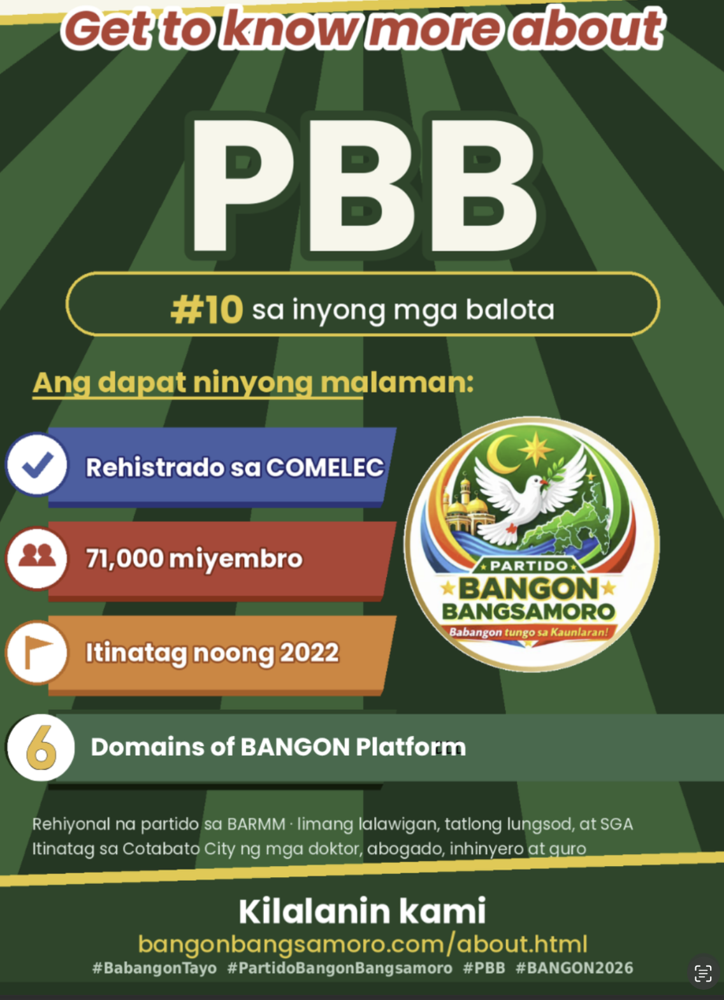

Tungkol sa Partido Bangon Bangsamoro
Isang rehiyonal na partido sa BARMM, itinatag noong 2022 sa Cotabato City ng mga propesyonal at grassroots na lider. Nagpapatuloy kami ng espiritu ng kapayapaan — sa pamamagitan ng malinis na pamamahala, tapat na serbisyo, at konkretong resulta para sa bawat pamilyang Bangsamoro.

Ang simula
Bakit binuo ang PBB
Mahigit dalawang dekada ng proseso ng kapayapaan ang nagbigay sa atin ng pinakamahalagang regalo: ang katahimikan. Salamat sa sakripisyo ng marami, hindi na naririnig ang putukan. Ngunit para sa maraming pamilya sa BARMM, ang kapayapaan ay hindi pa nakararating sa mesa — sa anyo ng sapat na pagkain, maayos na health center, o disenteng trabaho para sa mga kabataan.
Noong 2022, nagtipon sa Cotabato City ang isang grupo ng doktor, abogado, inhinyero, guro, at lider ng komunidad. Ang tanong nila: Paano natin isasalin ang kapayapaan sa konkretong ginhawa para sa bawat pamilya? Ang sagot ay ang PBB — isang partido na nagpapatuloy ng layunin ng kapayapaan, sa pamamagitan ng malinis na pamamahala at tapat na serbisyo.
Hindi kami nagsisimula mula sa wala. Itinatayo namin sa pundasyon ng kapayapaang itinatag ng iba — at naniniwala kami na ang susunod na hakbang ay ang pagtatayo ng sistema na nagpapadala ng resulta: ospital na may gamot, paaralan na may internet, at merkado na bukas para sa ating mga produkto.
Leadership
Nashrudin Piang Kusain

Regional President · Founding leader, 2022
Si Kusain ay isang propesyonal na naniniwala na ang Bangsamoro ay uuumad sa pamamagitan ng meritokrasya, transparency, at maayos na pagpaplano. Itinatag niya ang PBB bilang isang partido na bukas sa lahat — mula sa mga magsasaka hanggang sa mga doktor — na handang maglingkod nang tapat.
Siya ang nagpanukala ng BANGON platform — anim na haliging naglalayong gawing future-ready ang Bangsamoro, mula sa libreng internet at Super Health Stations hanggang sa Green Skills at Shari'ah-compliant na financing. Ang kanyang pananaw: ang bawat pamilya ay may karapatang makita ang resulta ng kapayapaan sa kanilang araw-araw na buhay.
"Ang kapayapaan ay hindi lang pagtigil ng putukan — ito ay disenteng kabuhayan sa bawat mesa. Ito ang aming pangako, at ito ang aming gagawin."
Ang aming pinaninindigan
Limang saligang haligi
Pananalig sa Iisang Diyos
Ang pananampalataya ang moral na saligan ng paglilingkod — hindi kasangkapan sa kampanya, kundi gabay sa bawat desisyon.
Awtonomiyang Rehiyonal
Tunay na awtonomiya sa loob ng balangkas ng Pilipinas, ayon sa Bangsamoro Organic Law — karapatan nating pamahalaan ang ating sariling kapalaran.
Katarungang Panlipunan
Ang pinakamalayong barangay ang panukat, hindi ang sentro ng lungsod. Walang Naiiwan.
Balanseng Ekolohiya
Ang lupa at dagat ay hiram sa susunod na henerasyon, hindi mana ng kasalukuyan. Pangangalagaan natin ito.
Kapayapaan at Pagkakasundo
Conflict-Sensitive na Pamamaraan — igagalang namin ang lahat ng nagambag sa kapayapaan, at patuloy nating itatayo ang tulay sa pagitan ng mga komunidad.
Meritokrasya
Ang kakayahan ang dapat magbukas ng pinto — para sa kabataang gustong umangat, sa propesyonal na gustong maglingkod, at sa bawat Bangsamoro na may pangarap.
Para kanino ang BANGON
Ang PBB ay para sa iyo
Hindi kami para sa iilang pamilya o sektor lang. Ang BANGON ay para sa bawat Bangsamoro — mula sa magsasaka sa laylayan hanggang sa propesyonal sa lungsod, mula sa kababaihan hanggang sa mga nakatatanda, mula sa mga negosyante hanggang sa mga dating kombatant.
Para sa Magsasaka at Mangingisda
₱8,000 household subsidy, Super Health Stations na may libreng gamot, at suporta sa eco-farming at sustainable fishing. Hindi pangako — konkretong tulong araw-araw.
Para sa Kabataan at Propesyonal
Libreng internet sa paaralan, merit-based na pagkakataon, at Green Skills training. Ang iyong degree ay magbubukas ng pinto — hindi ang iyong apelyido.
Para sa mga Ina at Kababaihan
Proteksyon laban sa karahasan, scholarship para sa mga batang babae, at suporta sa women-led na negosyo. Ang kababaihan ay hindi dekorasyon — sila ang puso ng PBB.
Para sa mga Negosyante
Halal certification support, Shari'ah-compliant financing, at access sa global markets. Hindi lang tayo mamimili — tayo ay mag-e-export.
Para sa mga Peace Advocate
Reintegrasyon para sa dating kombatant, rehabilitasyon ng Marawi, at community-based dialogue. Iginagalang namin ang inyong sakripisyo — at ipapatupad namin ang pangako ng kapayapaan.
Para sa mga Nakatatanda
Malinis na pamamahala, pagpapahalaga sa pananampalataya at awtonomiya, at transparent na badyet. Ang inyong karunungan ang gabay namin.
Mga madalas itanong
Tungkol sa partido
Kailan itinatag ang PBB?
Noong 2022 sa Cotabato City, ng mga propesyonal at grassroots na lider. Binigyan ng rehistrasyon ng COMELEC noong 2026 para lumahok sa unang parliamentaryong halalan ng Bangsamoro.
Kaugnay ba ang PBB ng MILF o MNLF?
Ang PBB ay isang malayang partido na itinataguyod ang mapayapang pamamaraan, at isinusulong ang kapayapaan. Iginagalang namin ang sakripisyo ng MILF at MNLF. Ang PBB ay sariling organisasyon na nakatuon sa pagpapatupad ng pangako ng kapayapaan sa pamamagitan ng malinis na pamamahala at konkretong serbisyo.
Ilan ang miyembro ng PBB?
Humigit-kumulang 71,000 sa limang lalawigan, tatlong komponent na lungsod, at sa Special Geographic Area ng BARMM, mula pa noong 2022. Puwede kang makadagdag sa bilang na iyon sa pamamagitan ng membership form.
Sino ang namumuno sa PBB?
Si Nashrudin Piang Kusain, ang Regional President at nagtatag ng partido noong 2022. Isang propesyonal na may paniniwala na ang Bangsamoro ay uuumad sa pamamagitan ng meritokrasya, transparency, at maayos na pagpaplano.
Bakit "professional-led"?
Dahil doktor, abogado, inhinyero, at guro ang bumuo nito — mga taong ang trabaho ay pagpapatakbo ng sistema. Naniniwala kami na ang susunod na yugto ng Bangsamoro ay nangangailangan ng mga kakayahang technical at managerial — kasama ang respeto sa lahat ng nagambag sa kapayapaan.
Paano kayo nakikipagtulungan sa ibang partido?
Iginagalang namin ang bawat partido na may layunin para sa Bangsamoro. Ang aming fokus ay sa pagtatayo ng sistema — kooperatiba, asosasyon, samahan — na nagbibigay-kapangyarihan sa bawat sektor. Hindi kami kompetisyon; kami ay nag-aambag sa mas malawak na layunin ng pag-unlad ng Bangsamoro.
Mag-message sa amin
Gusto mong makausap ang isang tao mula sa PBB? Mag-message sa amin — sinasagot namin ito araw-araw.
Karaniwang sumasagot kami sa loob ng ilang oras. Para sa madalian — insidente, reklamo, o usaping pangkaligtasan — tumawag sa 0966 301 8777; may taong sasagot, hindi awtomatikong mensahe.